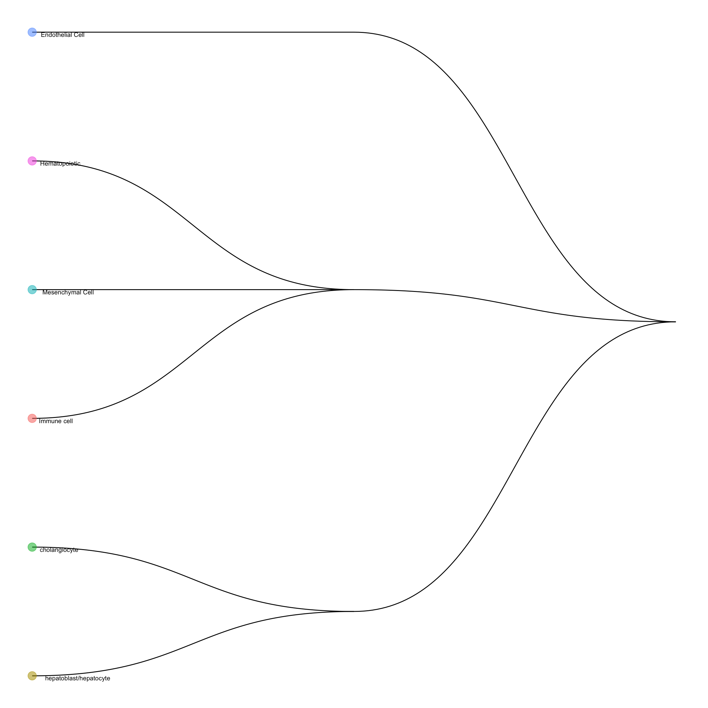
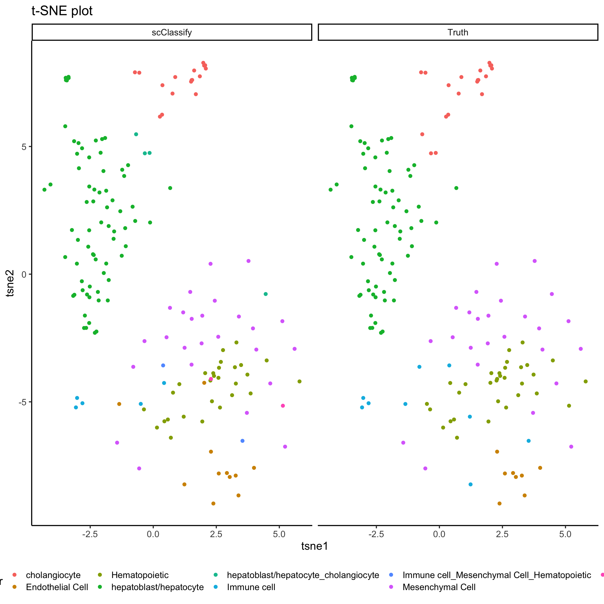

library(SingleCellExperiment)
library(ggplot2)
library(Rtsne)
sce_liver <- readRDS("./data/liver_scMerge.rds")
ids <- colData(sce_liver)$batch %in% c("GSE87795", "GSE90047")
subset_data <- sce_liver[,ids]A common application of single-cell RNA sequencing (RNA-seq) data is to identify discrete cell types. To take advantage of the large collection of well-annotated scRNA-seq datasets, scClassify package implements a set of methods to perform accurate cell type classification based on ensemble learning and sample size calculation.
The code below shows an example how to utilise a subset of data as reference data and then classify on the remain data.
library(scClassify)
exprsMat_liver <- assay(subset_data, "scMerge")
set.seed(2019)
# subsample 80% of the data as training dataset, and rest as test
idx <- sample(ncol(exprsMat_liver), round(ncol(exprsMat_liver) * 0.8))
liver_exprsMat_train <- exprsMat_liver[, idx]
liver_exprsMat_test <- exprsMat_liver[, -idx]
liver_cellTypes_train <- subset_data$cellTypes[idx]
liver_cellTypes_test <- subset_data$cellTypes[-idx]
table(liver_cellTypes_train)## liver_cellTypes_train
## cholangiocyte Endothelial Cell Hematopoietic
## 83 44 117
## hepatoblast/hepatocyte Immune cell Mesenchymal Cell
## 321 44 61We first perform non-ensemble scClassify by using 80% data as our reference dataset. We use WKNN as the KNN algorithm, DE (differential expression genes) as the gene selection method, and lastly pearson as the similarity calculation method.
trainLiver <- scClassify::train_scClassify(exprsMat_train = liver_exprsMat_train,
cellTypes_train = liver_cellTypes_train,
algorithm = "WKNN",
selectFeatures = c("limma"),
similarity = c("pearson"),
returnList = FALSE,
verbose = TRUE)## after filtering not expressed genes
## [1] 22864 670
## [1] "Feature Selection..."
## [1] "Number of genes selected to construct HOPACH tree 300"
## [1] "Constructing tree ..."
## [1] "Training...."
## [1] "============ selecting features by: limma ============"trainLiver## Class: scClassifyTrainModel
## Model name: training
## Feature selection methods: limma
## Number of cells in the training data: 670
## Number of cell types in the training data: 6We can visualise the cell type hirearchy tree using plotCellTypeTree():
scClassify::plotCellTypeTree(trainLiver@cellTypeTree)
Next, we perform predict_scClassify() with our trained model trainRes = trainLiver to predict the cell types of our query data matrix liver_exprsMat_test. Here, we used pearson as similarity metrics.
pred_res <- scClassify::predict_scClassify(exprsMat_test = liver_exprsMat_test,
cellTypes_test = liver_cellTypes_test,
trainRes = trainLiver,
algorithm = "WKNN",
features = c("limma"),
similarity = c("pearson"),
prob_threshold = 0.7,
verbose = TRUE)## Ensemble learning is disabled...
## Using parameters:
## similarity algorithm features
## "pearson" "WKNN" "limma"
## [1] "Using dynamic correlation cutoff..."
## [1] "Using dynamic correlation cutoff..."
## [1] "Using dynamic correlation cutoff..."
## classify_res
## correct correctly unassigned intermediate
## 0.91017964 0.00000000 0.02994012
## incorrectly unassigned error assigned misclassified
## 0.01197605 0.00000000 0.04790419scClassify_res <- pred_res$pearson_WKNN_limma$predResCheck predicting results with the original labels.
# create tsne object
set.seed(123)
tsne_result_test = Rtsne::Rtsne(t(liver_exprsMat_test), check_duplicates = FALSE)
#################################################
plot_data = data.frame(
tsne1 = rep(tsne_result_test$Y[,1], 2),
tsne2 = rep(tsne_result_test$Y[,2], 2),
cluster = factor(c(liver_cellTypes_test, scClassify_res)),
label = rep(c("Truth", "scClassify"), each = length(liver_cellTypes_test)))
ggplot(plot_data, aes(x = tsne1, y = tsne2, colour = cluster)) +
geom_point(size = 2) +
labs(title = "t-SNE plot") +
facet_grid(~label) +
theme(legend.position = "bottom")
tab <- table(pred_res$pearson_WKNN_limma$predRes, liver_cellTypes_test)
knitr::kable(tab)| cholangiocyte | Endothelial Cell | Hematopoietic | hepatoblast/hepatocyte | Immune cell | Mesenchymal Cell | |
|---|---|---|---|---|---|---|
| cholangiocyte | 17 | 0 | 0 | 0 | 0 | 0 |
| Endothelial Cell | 0 | 8 | 1 | 0 | 2 | 0 |
| Hematopoietic | 0 | 0 | 27 | 0 | 1 | 0 |
| hepatoblast/hepatocyte | 0 | 0 | 0 | 73 | 0 | 0 |
| hepatoblast/hepatocyte_cholangiocyte | 3 | 0 | 0 | 0 | 0 | 1 |
| Immune cell | 0 | 0 | 2 | 0 | 3 | 0 |
| Immune cell_Mesenchymal Cell_Hematopoietic | 0 | 0 | 0 | 0 | 2 | 0 |
| Mesenchymal Cell | 0 | 0 | 0 | 0 | 1 | 24 |
| unassigned | 0 | 0 | 2 | 0 | 0 | 0 |
sessionInfo()## R version 3.6.1 (2019-07-05)
## Platform: x86_64-apple-darwin15.6.0 (64-bit)
## Running under: macOS Mojave 10.14.6
##
## Matrix products: default
## BLAS: /Library/Frameworks/R.framework/Versions/3.6/Resources/lib/libRblas.0.dylib
## LAPACK: /Library/Frameworks/R.framework/Versions/3.6/Resources/lib/libRlapack.dylib
##
## locale:
## [1] en_AU.UTF-8/en_AU.UTF-8/en_AU.UTF-8/C/en_AU.UTF-8/en_AU.UTF-8
##
## attached base packages:
## [1] splines parallel stats4 stats graphics grDevices utils
## [8] datasets methods base
##
## other attached packages:
## [1] scClassify_0.2.0 forcats_0.4.0
## [3] stringr_1.4.0 scales_1.0.0
## [5] DropletUtils_1.6.0 monocle_2.14.0
## [7] DDRTree_0.1.5 irlba_2.3.3
## [9] VGAM_1.1-1 Matrix_1.2-17
## [11] plyr_1.8.4 ggpubr_0.2.3
## [13] magrittr_1.5 viridis_0.5.1
## [15] viridisLite_0.3.0 MAST_1.12.0
## [17] ggplot2_3.2.1 cluster_2.1.0
## [19] Rtsne_0.15 mclust_5.4.5
## [21] scdney_0.1.5 edgeR_3.28.0
## [23] limma_3.42.0 dplyr_0.8.3
## [25] SingleCellExperiment_1.8.0 SummarizedExperiment_1.16.0
## [27] DelayedArray_0.12.0 BiocParallel_1.20.0
## [29] matrixStats_0.55.0 Biobase_2.46.0
## [31] GenomicRanges_1.38.0 GenomeInfoDb_1.22.0
## [33] IRanges_2.20.0 S4Vectors_0.24.0
## [35] BiocGenerics_0.32.0
##
## loaded via a namespace (and not attached):
## [1] utf8_1.1.4 R.utils_2.9.0 tidyselect_0.2.5
## [4] lme4_1.1-21 htmlwidgets_1.5.1 grid_3.6.1
## [7] combinat_0.0-8 docopt_0.6.1 munsell_0.5.0
## [10] codetools_0.2-16 statmod_1.4.32 withr_2.1.2
## [13] colorspace_1.4-1 fastICA_1.2-2 highr_0.8
## [16] knitr_1.25 rstudioapi_0.10 DescTools_0.99.29
## [19] ggsignif_0.6.0 pbmcapply_1.5.0 labeling_0.3
## [22] slam_0.1-45 GenomeInfoDbData_1.2.2 polyclip_1.10-0
## [25] farver_1.1.0 pheatmap_1.0.12 rhdf5_2.30.0
## [28] vctrs_0.2.0 generics_0.0.2 ipred_0.9-9
## [31] xfun_0.10 randomForest_4.6-14 diptest_0.75-7
## [34] R6_2.4.0 doParallel_1.0.15 graphlayouts_0.5.0
## [37] locfit_1.5-9.1 bitops_1.0-6 assertthat_0.2.1
## [40] ggraph_2.0.0 nnet_7.3-12 gtable_0.3.0
## [43] tidygraph_1.1.2 timeDate_3043.102 rlang_0.4.1
## [46] zeallot_0.1.0 lazyeval_0.2.2 ModelMetrics_1.2.2
## [49] acepack_1.4.1 broom_0.5.2 checkmate_1.9.4
## [52] yaml_2.2.0 reshape2_1.4.3 abind_1.4-5
## [55] backports_1.1.5 Hmisc_4.2-0 caret_6.0-84
## [58] tools_3.6.1 lava_1.6.6 clusteval_0.1
## [61] ellipsis_0.3.0 RColorBrewer_1.1-2 proxy_0.4-23
## [64] ggridges_0.5.1 Rcpp_1.0.2 base64enc_0.1-3
## [67] zlibbioc_1.32.0 purrr_0.3.3 RCurl_1.95-4.12
## [70] densityClust_0.3 rpart_4.1-15 cowplot_1.0.0
## [73] ggrepel_0.8.1 data.table_1.12.6 RANN_2.6.1
## [76] mvtnorm_1.0-11 mitml_0.3-7 amap_0.8-17
## [79] evaluate_0.14 sparsesvd_0.2 gridExtra_2.3
## [82] HSMMSingleCell_1.5.0 compiler_3.6.1 tibble_2.1.3
## [85] mice_3.6.0 crayon_1.3.4 proxyC_0.1.5
## [88] minqa_1.2.4 R.oo_1.22.0 htmltools_0.4.0
## [91] mgcv_1.8-29 segmented_1.0-0 Formula_1.2-3
## [94] snow_0.4-3 tidyr_1.0.0 expm_0.999-4
## [97] RcppParallel_4.4.4 lubridate_1.7.4 tweenr_1.0.1
## [100] MASS_7.3-51.4 boot_1.3-23 cli_1.1.0
## [103] R.methodsS3_1.7.1 pan_1.6 gower_0.2.1
## [106] igraph_1.2.4.1 pkgconfig_2.0.3 foreign_0.8-72
## [109] recipes_0.1.7 hopach_2.46.0 foreach_1.4.7
## [112] dqrng_0.2.1 XVector_0.26.0 minpack.lm_1.2-1
## [115] prodlim_2018.04.18 digest_0.6.22 rmarkdown_1.16
## [118] htmlTable_1.13.2 dendextend_1.12.0 jomo_2.6-9
## [121] nloptr_1.2.1 lifecycle_0.1.0 nlme_3.1-141
## [124] Rhdf5lib_1.8.0 fansi_0.4.0 pillar_1.4.2
## [127] lattice_0.20-38 survival_2.44-1.1 glue_1.3.1
## [130] qlcMatrix_0.9.7 FNN_1.1.3 iterators_1.0.12
## [133] ggforce_0.3.1 class_7.3-15 stringi_1.4.3
## [136] HDF5Array_1.14.0 mixtools_1.1.0 doSNOW_1.0.18
## [139] latticeExtra_0.6-28 e1071_1.7-2